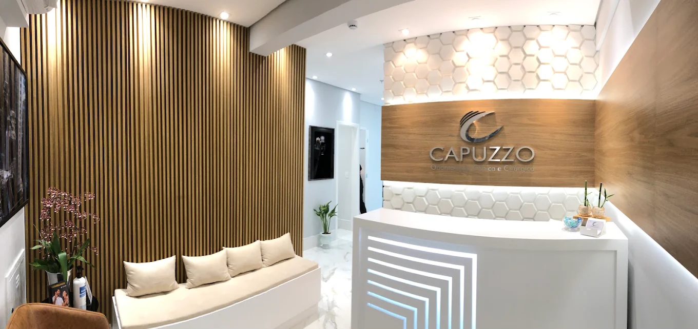
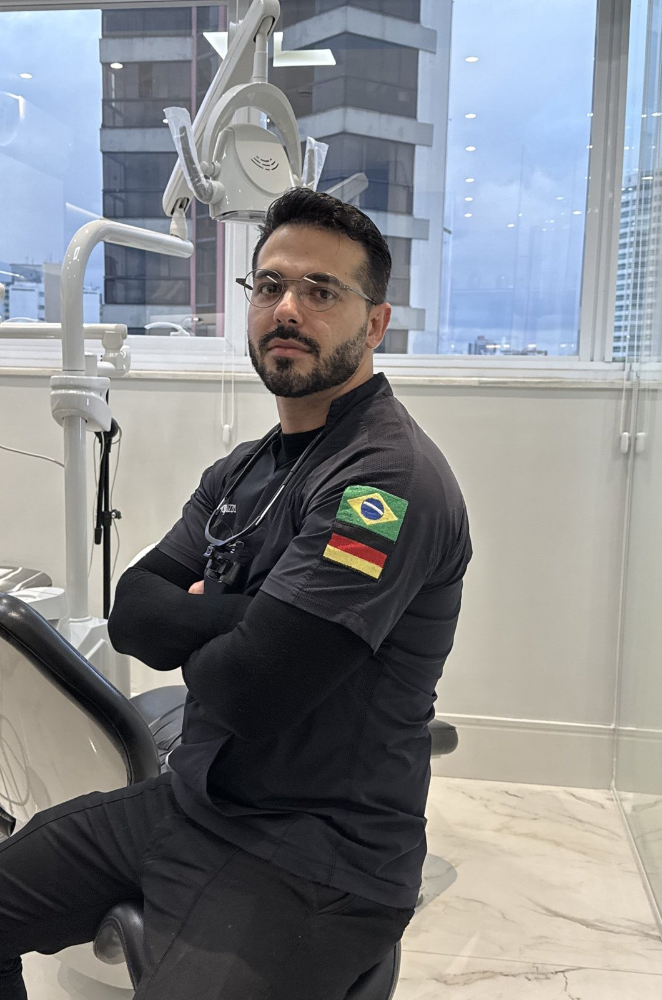
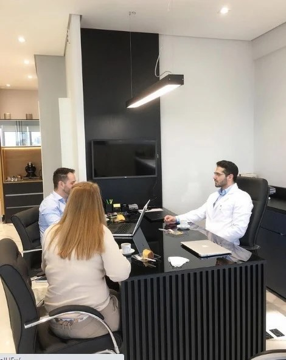
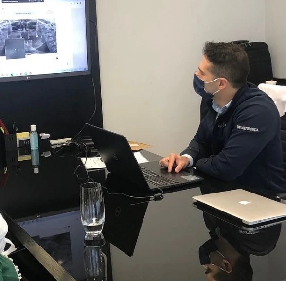
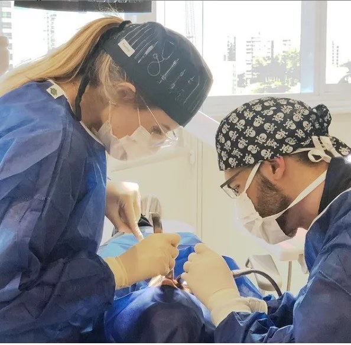

Implante unitário
Para quem perdeu um dente. Implante de titânio com coroa feita sob medida para combinar com os dentes vizinhos.
- Não desgasta os dentes vizinhos
- Carga imediata quando o exame permite
- Prótese definitiva em [inserir prazo]
Implante unitário e carga imediata, planejados e feitos pelo Dr. Diego Capuzzo.
Do dente único à arcada inteira. Quando a tomografia permite, você sai da clínica com os dentes fixos no mesmo dia da cirurgia.

Do dente único à arcada inteira. A indicação de cada caso sai da avaliação e da tomografia, analisadas pelo Dr. Diego.
Para quem perdeu um dente. Implante de titânio com coroa feita sob medida para combinar com os dentes vizinhos.
Para quem perdeu todos ou quase todos os dentes de uma arcada. Prótese fixa sobre implantes, instalada no mesmo dia quando o caso permite.
Para quem ouviu que não tem osso suficiente para o implante.
No método convencional, o paciente espera meses entre a instalação do implante e a prótese. Na carga imediata, os dentes provisórios fixos são instalados no mesmo dia.
Um tratamento que levaria quase um ano pode ser resolvido em menos de 12 horas. Isso depende da tomografia e da estabilidade do implante, avaliadas pelo Dr. Diego.

Cirurgião-dentista com foco em implantodontia e cirurgia. É ele quem faz a sua avaliação, analisa a tomografia, planeja o tratamento e realiza a cirurgia.
Na Clínica Capuzzo, o tratamento acontece com equipe completa no mesmo lugar, da avaliação à prótese.
[inserir formação, especializações e cursos do Dr. Diego]
Você conhece cada etapa, e o valor do seu caso, antes de decidir.
Você chama no WhatsApp e a equipe agenda sua avaliação no melhor horário.
WHATSAPPEle entende o que você busca e faz o exame clínico na cadeira.
PRESENCIALSe você já tem o exame, nos traga para avaliarmos, caso seja necessário indicamos algumas clínicas.
DIAGNÓSTICOO Dr. Diego mostra o planejamento do seu caso e você recebe o valor do tratamento.
NA AVALIAÇÃOCom anestesia local. Quando indicado, você sai com os dentes fixos no mesmo dia. Pequenos ajustes na prótese depois de um a dois meses são normais.
CARGA IMEDIATA SE INDICADA"Clínica Capuzzo é a melhor clínica odontológica de SBC. Atendimento excepcional deste a recepção e se estende até o consultório. Dr. Diego Capuzzo é um excelente profissional, extremamente ético e muito humano. Transmite confiabilidade e segurança, sempre priorizando qualidade na entrega dos procedimentos e cirurgias realizadas e sempre levando em conta a satisfação dos pacientes."
"Clínica com excelente profissionais, em destaque o Dr. Diego, que sempre foi atencioso e esclareceu cada dúvida com paciência e dedicação, levando em consideração o que o paciente procura e sugerindo o que é necessário e melhor, clínica toda estruturada com qualidade e seriedade no trabalho, em momento algum deixou de atender telefonemas, precisando remarcar caso necessário eles procuram sempre uma maneira de ajudar, simplesmente não tem como falar alguma coisa de ruim !"
"Desde o atendimento até o pós são impecáveis, a clínica é espetacular em questão de bom atendimento e instalações, Toda a equipe muito atenciosa e preparada, adoro o trabalho do Dr Diego e equipe, recomendo de olhos fechado"



O valor depende do caso: quantos implantes, se precisa de enxerto e qual prótese. Por isso ele é informado na avaliação, depois da tomografia e do planejamento.
A cirurgia é feita com anestesia local. O implante é instalado no osso, que não dói como a gengiva ou o dente. A equipe acompanha você durante todo o procedimento.
É a instalação dos dentes provisórios fixos sobre os implantes no mesmo dia da cirurgia. Ela é indicada quando a tomografia e a estabilidade do implante permitem.
Com a carga imediata, você sai da clínica com os dentes fixos e já consegue se alimentar. [confirmar orientação de alimentação nas primeiras semanas]
A prótese removível se apoia na gengiva e pode se mover ao falar e ao comer. O implante fica fixo no osso e devolve a mastigação. Na avaliação, o Dr. Diego mostra qual é a indicação para o seu caso.
Pequenos ajustes na prótese depois de um a dois meses são normais. Eles acontecem porque a musculatura do rosto se adapta aos novos dentes e fazem parte do tratamento.
[resposta do Dr. Diego: enxerto e outras técnicas que a clínica faz]
[inserir marcas]
Av. Antártico, 381, sala 22, Jardim do Mar, São Bernardo do Campo. De segunda a sexta, das 9h às 20h.
Chame no WhatsApp. A equipe marca sua avaliação com o Dr. Diego no horário que funciona para você.